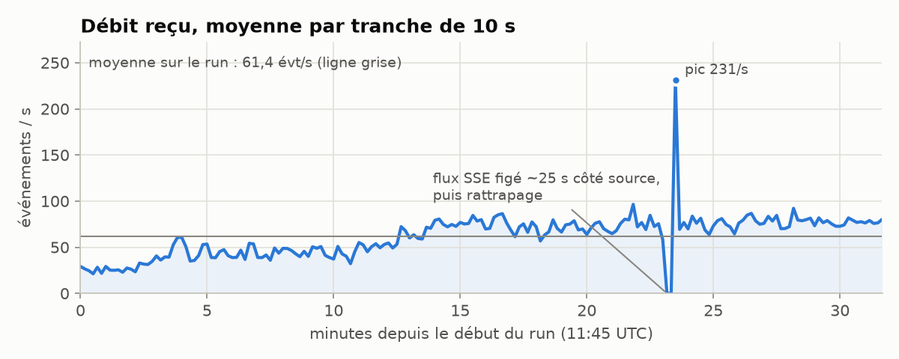
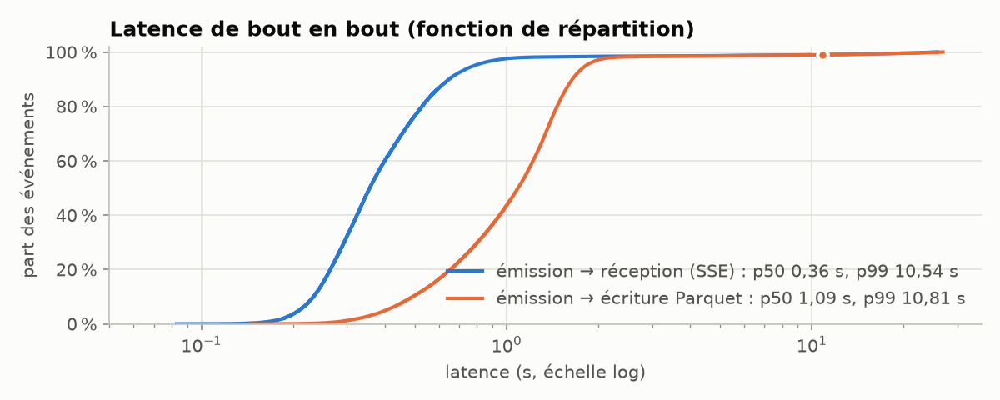
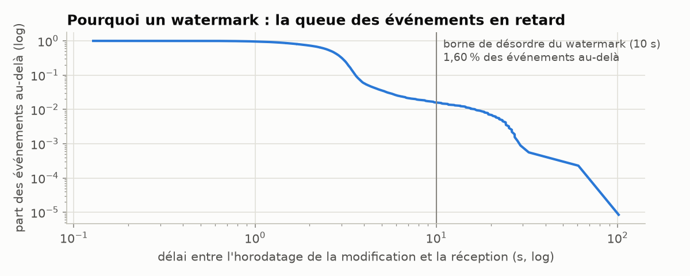
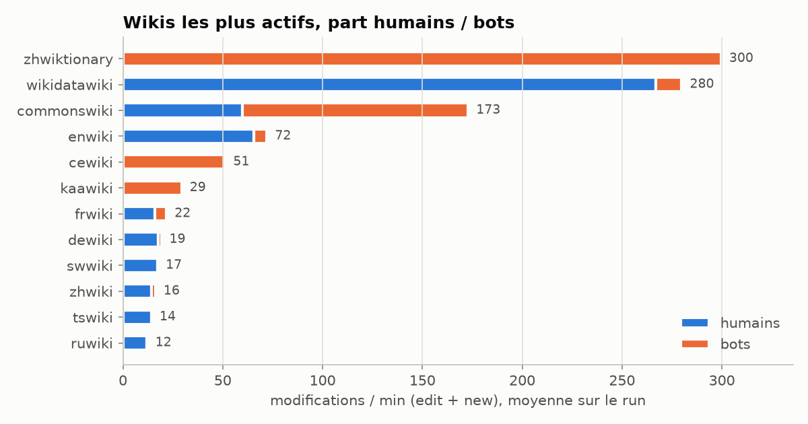
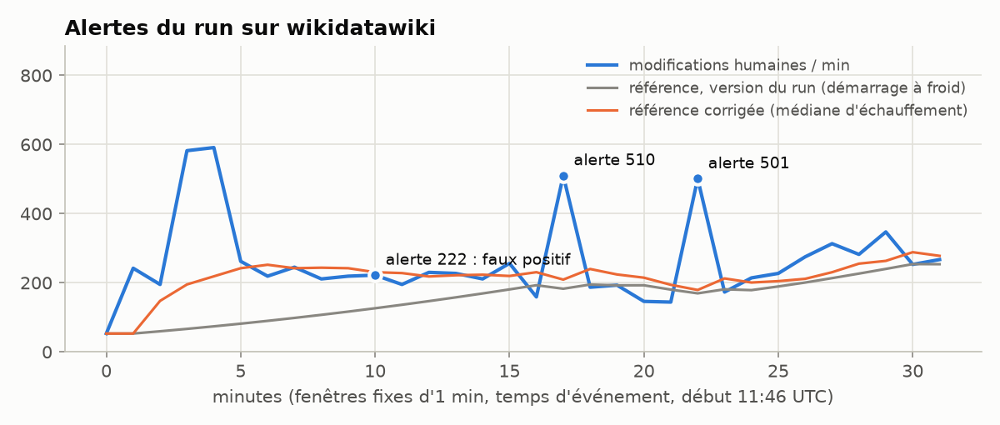

wiki-stream
Run du 2026-11-04, 11:45 → 12:17 UTC, flux
mediawiki.recentchange de Wikimedia. Page générée par make report à partir du lac Parquet et des journaux du pipeline.
Figures





Latences mesurées
Depuis le lac (p50 / p90 / p99) : émission Wikimedia → réception 0,36 / 0,65 / 10,54 s, émission → début d'écriture Parquet 1,09 / 1,64 / 10,82 s. Horodatage de la modification → réception 2,64 / 3,58 / 16,45 s, avec 1,60 % des événements au-delà de 10 s.
Alertes (6)
| fin de fenêtre (UTC) | type | clé | étiquette | valeur | référence | score | contexte |
|---|---|---|---|---|---|---|---|
| 11:56 | wiki_spike | wikidatawiki | pic d'activité humaine sur le wiki | 222 | 126,2 | 8,5 | 49 contributeurs humains ; pages : Q141997152, Q2881660, Q48863885 |
| 12:03 | wiki_spike | wikidatawiki | pic d'activité humaine sur le wiki | 510 | 182,7 | 24,2 | 54 contributeurs humains ; pages : Q141997181, Q28842207, Q2883429 |
| 12:04 | wiki_spike | commonswiki | pic d'activité humaine sur le wiki | 136 | 38,1 | 10,9 | 33 contributeurs humains ; pages : File:Illiparambil Family in Bicentennial Glory - Cover Page.png, File:Spektaklo dum la 98-a UK 5.jpg, Category:Avia petrol stations in Poland |
| 12:08 | wiki_spike | wikidatawiki | pic d'activité humaine sur le wiki | 501 | 169,3 | 25,5 | 48 contributeurs humains ; pages : Q289953, Q141997260, Q137574262 |
| 12:09 | wiki_spike | commonswiki | pic d'activité humaine sur le wiki | 124 | 36,2 | 6,5 | 25 contributeurs humains ; pages : File:France, Condé s-Aisne, Façade de l'Eglise - A47417.jpg, File:Södertälje kanal och bro Parti av Södertelje Axel Eliassons Konstförlag.jpg, Category:Occitanie photographs taken on 2015-09-16 |
| 12:13 | wiki_spike | commonswiki | pic d'activité humaine sur le wiki | 125 | 47,3 | 6,0 | 27 contributeurs humains ; pages : File:The controversy between Khusraw and Farhād (folio 67r, ruler detail). Khamsah of Nizami, 1484, Shiraz (Strasbourg, Bibliothèque nationale et universitaire, MS 4715).jpg, File:Goethe-Gymnasium Stolberg 2025-06-07-13.jpg, File:Goethe-Gymnasium Stolberg 2025-06-07-11.jpg |
Rejeu avec le détecteur corrigé (7 alertes)
Le même lac rejoué par wikistream backtest avec la version corrigée du détecteur de wikis (échauffement par médiane). Alertes du run qui disparaissent : wikidatawiki à 11:56 (222 contre 126).
| fin de fenêtre (UTC) | wiki | valeur | référence | score | étiquette | aussi en live |
|---|---|---|---|---|---|---|
| 12:03 | wikidatawiki | 510 | 209,1 | 8,8 | lot semi-automatique probable (3 comptes = 51 % des modifications humaines) | oui |
| 12:03 | zhwiki | 33 | 11,5 | 6,3 | lot semi-automatique probable (3 comptes = 79 % des modifications humaines) | non |
| 12:04 | commonswiki | 136 | 38,6 | 11,6 | lot semi-automatique probable (3 comptes = 71 % des modifications humaines) | oui |
| 12:08 | wikidatawiki | 501 | 179,0 | 8,7 | pic d'activité humaine sur le wiki | oui |
| 12:09 | commonswiki | 124 | 36,2 | 12,0 | lot semi-automatique probable (3 comptes = 72 % des modifications humaines) | oui |
| 12:13 | commonswiki | 125 | 45,3 | 8,1 | lot semi-automatique probable (3 comptes = 62 % des modifications humaines) | oui |
| 12:15 | commonswiki | 133 | 58,3 | 6,3 | lot semi-automatique probable (3 comptes = 63 % des modifications humaines) | non |
Wikis les plus actifs
| wiki | modifs | modifs/min | bots | nouvelles pages | octets ajoutés | octets retirés |
|---|---|---|---|---|---|---|
| zhwiktionary | 9 582 | 299,6 | 100 % | 9 542 | 595 278 | 0 |
| wikidatawiki | 8 949 | 279,9 | 5 % | 1 172 | 4 839 412 | 1 259 742 |
| commonswiki | 5 530 | 172,9 | 65 % | 79 | 8 652 684 | 128 422 |
| enwiki | 2 307 | 72,1 | 9 % | 129 | 1 091 029 | 148 131 |
| cewiki | 1 638 | 51,2 | 100 % | 0 | 502 | 85 033 |
| kaawiki | 939 | 29,4 | 100 % | 0 | 44 928 | 0 |
| frwiki | 697 | 21,8 | 27 % | 22 | 131 788 | 44 614 |
| dewiki | 614 | 19,2 | 8 % | 13 | 104 411 | 134 690 |
| swwiki | 558 | 17,4 | 0 % | 4 | 2 028 539 | 87 160 |
| zhwiki | 522 | 16,3 | 12 % | 16 | 140 039 | 349 018 |
| tswiki | 457 | 14,3 | 0 % | 0 | 2 631 927 | 84 107 |
| ruwiki | 389 | 12,2 | 3 % | 29 | 225 733 | 56 462 |
| itwiki | 380 | 11,9 | 30 % | 31 | 188 578 | 10 801 |
| trwiki | 332 | 10,4 | 82 % | 245 | 71 582 | 2 839 |
| jawiki | 319 | 10,0 | 17 % | 7 | 118 573 | 10 043 |
Top pages : sketches contre comptage exact
39 170 modifications sur 32 755 pages distinctes. Space-Saving à k = 2 000 compteurs (erreur garantie ≤ N/k = 19,6), Count-Min 5 437 × 5 (212 Kio, erreur ≤ εN = 19,6 avec probabilité ≥ 99 %). Sur le top 20 : erreur max Space-Saving 18, Count-Min 6 ; bornes respectées : oui. Pages réellement dans le top 20 (ex æquo compris, seuil 18 modifications) : 14/20 avec l'ordre de Space-Saving, 20/20 quand ses candidats sont reclassés par Count-Min.
| page | exact (DuckDB) | Space-Saving | Count-Min |
|---|---|---|---|
| wikidatawiki:Lexeme:L1484541 | 88 | 98 (±10) | 91 |
| labswiki:Server Admin Log | 62 | 63 (±3) | 68 |
| wikidatawiki:Q125738 | 55 | 56 (±1) | 59 |
| commonswiki:File:Riboflavin penicillinamide.jpg | 51 | 54 (±3) | 52 |
| wikidatawiki:Q141996928 | 49 | 49 (±0) | 53 |
| wikidatawiki:Q106289447 | 46 | 47 (±1) | 51 |
| wikidatawiki:Lexeme:L1545731 | 21 | 38 (±17) | 24 |
| wikidatawiki:Q29025524 | 17 | 35 (±18) | 21 |
| wikidatawiki:Q141997603 | 18 | 35 (±18) | 23 |
| wikidatawiki:Q20830500 | 28 | 31 (±3) | 29 |
| wikidatawiki:Q111447012 | 18 | 31 (±13) | 23 |
| wikidatawiki:Q3117560 | 18 | 31 (±14) | 20 |
| wikidatawiki:Q141997218 | 18 | 30 (±12) | 19 |
| wikidatawiki:Q3358290 | 12 | 30 (±18) | 14 |
| wikidatawiki:Q86739160 | 17 | 29 (±12) | 21 |
| wikidatawiki:Q111302475 | 11 | 29 (±18) | 14 |
| wikidatawiki:Q60990112 | 11 | 29 (±18) | 15 |
| wikidatawiki:Q141997151 | 24 | 28 (±4) | 29 |
| wikidatawiki:Q141997178 | 19 | 28 (±9) | 22 |
| wikidatawiki:Q141997805 | 12 | 28 (±16) | 17 |